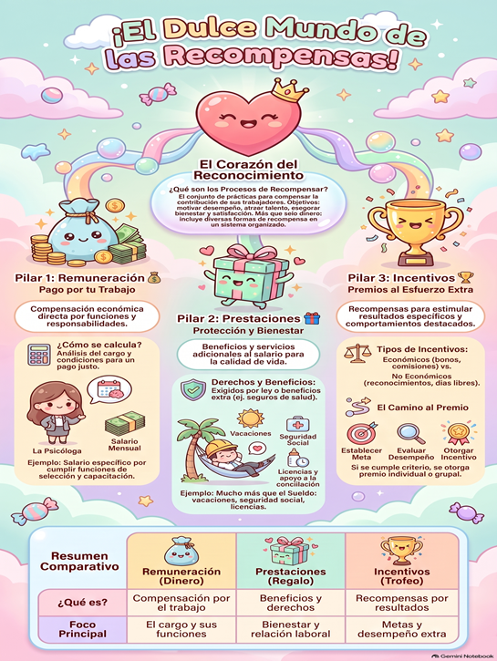
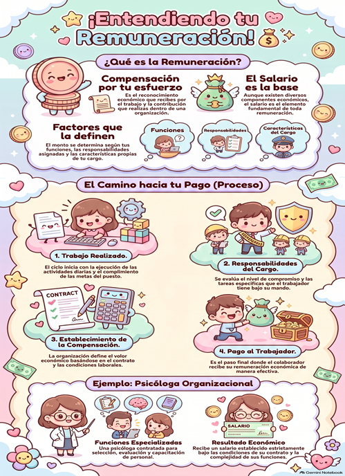
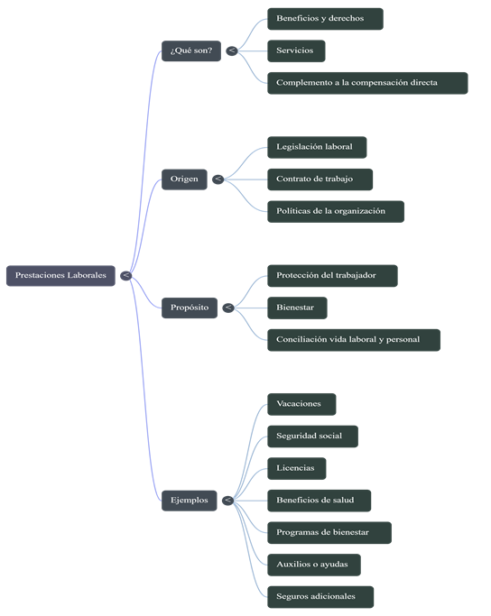
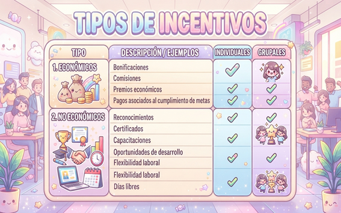

Visión Global
Mundo de las Recompensas
Infografía integral sobre el corazón del reconocimiento, los tres pilares del proceso y su tabla comparativa.
Prácticas de Gestión Humana para reconocer y retribuir la contribución, el esfuerzo y el desempeño de los colaboradores a través de un sistema integral que equilibra remuneración, prestaciones e incentivos.
Los procesos para recompensar a las personas constituyen el conjunto articulado de políticas y prácticas organizacionales orientadas a retribuir la contribución, el tiempo, el conocimiento y los logros de los colaboradores en la organización.
Este sistema busca establecer una relación de correspondencia justa entre el aporte de cada persona y las retribuciones tangibles e intangibles que recibe. Trasciende la noción del simple pago monetario al integrar beneficios de seguridad, calidad de vida y estímulos al alto desempeño.

Reconocer la contribución: valorar adecuadamente el aporte de los trabajadores al cumplimiento de la misión organizacional.
Compensar con equidad: garantizar retribuciones justas conforme a las responsabilidades del cargo y las condiciones del mercado laboral.
Motivar el desempeño: impulsar la proactividad, el compromiso y la orientación a resultados superiores.
Favorecer la satisfacción: generar un clima de justicia distributiva y reconocimiento individual y colectivo.
Atraer y retener talento: posicionar a la organización como un empleador atractivo para los profesionales calificados.
Promover el bienestar integral: brindar cobertura y beneficios que fortalezcan la salud y la armonía entre vida laboral y familiar.
Se enfoca en retribuir el esfuerzo, las competencias y la dedicación efectiva que las personas aportan diariamente.
No se reduce al sueldo; articula compensación económica directa, beneficios de bienestar e incentivos por metas.
Crea puentes directos entre el logro de resultados específicos y las recompensas otorgadas al colaborador.
Fomenta el sentido de pertenencia y compromiso cuando el colaborador percibe que su esfuerzo es valorado con justicia.
Exige políticas, escalas salariales y reglas claras para evitar la discrecionalidad y la percepción de inequidad.
Un sistema de recompensas competitivo reduce la rotación no deseada y cuida la estabilidad del capital humano.
El proceso de recompensar a las personas se articula a través de tres componentes complementarios: 💰 Remuneración, 🎁 Prestaciones y 🏆 Incentivos. Haz clic en cada panel para conocer su definición, funcionamiento, ejemplos e infografías explicativas.
La remuneración es la contraprestación económica directa y periódica que recibe un colaborador por los servicios prestados a la organización. Tiene como base fundamental el salario contractual pactado, determinado por el análisis y valoración del cargo, las competencias requeridas y las condiciones del mercado laboral.
Para definir una remuneración equitativa, la organización establece escalas y bandas salariales a partir de tres factores esenciales: las funciones asignadas, las responsabilidades y nivel de toma de decisiones y las características técnicas del puesto. De este modo, se asegura la equidad interna y la competitividad externa.
Una organización contrata a una psicóloga organizacional para liderar los procesos de selección por competencias, evaluación del desempeño y planes de capacitación. Por la complejidad de sus funciones especializadas, se le asigna un salario mensual estipulado en su contrato, garantizando el pago formal y oportuno de sus haberes laborales.



Las prestaciones son un conjunto de beneficios, servicios, derechos y asistencias que complementan la remuneración monetaria directa. Tienen por propósito proteger la seguridad económica, la salud y el bienestar del trabajador y su grupo familiar, garantizando condiciones de trabajo dignas y calidad de vida.
Las prestaciones pueden originarse en tres fuentes: legales (obligatorias según la legislación laboral de cada país, como cesantías, prima de servicios o seguridad social), contractuales (acordadas en convenios colectivos o contratos individuales) y voluntarias (otorgadas por políticas internas de la organización para enriquecer su propuesta de valor al empleado).
Además de su sueldo quincenal o mensual, los colaboradores de una compañía cuentan con afiliación a seguridad social en salud, vacaciones pagadas anuales, primas de ley y una póliza de seguro médico complementario financiada por la empresa como beneficio de bienestar.



Los incentivos son recompensas contingentes diseñadas para estimular, reconocer y premiar niveles de rendimiento superiores, comportamientos estratégicos o el logro de metas específicas, tanto de carácter individual como grupal.
El mecanismo se basa en la claridad previa: la empresa define metas objetivas y los indicadores de evaluación. Al término del periodo de evaluación, si los resultados alcanzados satisfacen los criterios acordados, se otorga la recompensa respectiva.
El departamento comercial establece la meta de aumentar las afiliaciones un 15% en el semestre. El equipo que supera la cota de calidad y servicio recibe una bonificación económica compartida y dos días de descanso remunerado como reconocimiento a su excelencia.



Explora las cuatro ilustraciones, mapas e infografías diseñadas para este proceso. Puedes hacer clic en cualquiera de ellas para examinarla en alta resolución con el visor interactivo.
Infografía integral sobre el corazón del reconocimiento, los tres pilares del proceso y su tabla comparativa.
Factores que definen el salario, ciclo de 4 pasos hacia el pago y aplicación práctica con el perfil de psicóloga organizacional.
Esquema estructurado sobre origen de ley, convenios, propósitos de bienestar y catálogo de beneficios para los colaboradores.
Tabla comparativa con ejemplos de recompensas monetarias, reconocimientos simbólicos y modalidades individuales o grupales.
Compensación periódica y directa que retribuye el trabajo efectuado según las funciones y responsabilidades del puesto.
Beneficios, asistencias y coberturas de ley o extralegales que complementan el sueldo y garantizan bienestar y seguridad.
Estímulos variables económicos o simbólicos vinculados al cumplimiento de objetivos sobresalientes individuales o grupales.
Video relacionado con los beneficios y derechos asociados a la relación laboral y la seguridad social.
Ver videoMaterial audiovisual sobre los distintos esquemas de recompensas económicas y reconocimientos no económicos.
Ver videoEjemplo práctico ilustrado de cómo se formulan y aplican programas de incentivos en una empresa moderna.
Ver videoResumen audiovisual conciso sobre los tres ejes del sistema: remuneración, prestaciones e incentivos.
Ver síntesis